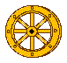
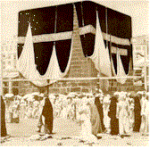

Note: A flag next to a link shows what language the website is in. If it is followed by this icon: ( ), it is a video in that spoken language. If it is followed by this icon:
), it is a video in that spoken language. If it is followed by this icon:  , it is in the sign language of that country. If a globe is followed by this hands icon, there is an animated text in International Gesture.
, it is in the sign language of that country. If a globe is followed by this hands icon, there is an animated text in International Gesture.
 Books.
Books.Note: These books usually have a Christian perspective, but many of the unique characteristics of religious/spiritual interpreting will be found therein and can be applied with a wise stretch of the imagination to non-Christian settings as well.
 Bearden, C.
Bearden, C.
 & J. Potter (1973). Manual of religious signs. Silver Spring, MD: National Association of the Deaf.
& J. Potter (1973). Manual of religious signs. Silver Spring, MD: National Association of the Deaf.
Costello, E. (1986). Religious Signing: The new comprehensive guide for all faiths. New York: Bantam Books.
High, K. (2003, December). Creating sacred space: The role of the interpreter in the religious setting. VIEWS, 21, 1. Excerpt: Ultimately, sacred space is not a place at all but simply an effort throught the shaping of outward space to inspire an inner space where the divine can be encountered. Each religion has their own concept of what that experience of the divine is like but all religions seek that inner sacred space.
Maxwell, M. and S. Boster (1982). Interpreting Hymns for Deaf Worshipers. In Sign Language Studies, 36, 217-226.
Magida, A. (ed.) (1999). How to be a perfect stranger: A guide to etiquette in other people's religious ceremonies. Woodstock, VT: Jewish Lights Publishing. Two volumes. The general format is: History and beliefs, The basic service, Holy days and festivals, Life cycle events, Home celebrations. It describes and advises for the following religions: Volume 1 - Assemblies of God, Baptist, Buddhist, Christian Science, Churches of Christ, Disciples of Christ, Episcopalian, Greek Orthodox, Hindu, Islam, Jehovah's Witness, Jewish, Lutheran, Methodist, Mormon, Presbyterian, Quaker, Roman Catholic, Seventh-day Adventist, United Church of Christ. Volume 2 - African American Methodist Church, Bahai'i, Christian and Missionary Allegiance, The Christian Congregation, Church of the Brethern, Church of the Nazarene, Evangelical Free Church of America, International Church of the Foursquare Gospel, International Pentecostal Holiness Church, Mennonite/ Amish, Native American, Orthodox Church, Pentecostal Church of God, Reformed Church in America, Sikh, Unitarian Universalist, Wesleyan.
Rice, C. 1982. Singing in signs. Nashville: Thomas Nelson Publishers.
_____ (1975). Sing Praise. Nashville: Broadman Press.
(1) Consult with Deaf people of a given denomination/religion,
(2) Deaf "missions" to that denomination/religion,
(3) knowledgeable interpreters, and
(4) spiritual leaders.
 CDs, DVDs, & videotapes.Use dogpile or other search engines to find "[name of religion] videotapes".
Bar-Tzur, D. (2004). Technical & specialized vocabulary resource ASL dictionary. Signs of Development. Over 15,000 entries. The dictionary is set up in major categories and further subdivided into categories making navigation as simple as point and click and each entry shows David as the sign model signing the term. Included in the 2,000 entries for religious terms, which are largely Jewish and Christian, there are dozens of entries for Buddhism, Hinduism, Islam, Jehovah's Witness, Kwanzaa, Native American spirituality, and Wicca. To order.
CDs, DVDs, & videotapes.Use dogpile or other search engines to find "[name of religion] videotapes".
Bar-Tzur, D. (2004). Technical & specialized vocabulary resource ASL dictionary. Signs of Development. Over 15,000 entries. The dictionary is set up in major categories and further subdivided into categories making navigation as simple as point and click and each entry shows David as the sign model signing the term. Included in the 2,000 entries for religious terms, which are largely Jewish and Christian, there are dozens of entries for Buddhism, Hinduism, Islam, Jehovah's Witness, Kwanzaa, Native American spirituality, and Wicca. To order.
 Discussion groupsL-Soft. Click on "Search for a mailing list of interest" and search under name of religion desired. Click here to find out how.
Discussion groupsL-Soft. Click on "Search for a mailing list of interest" and search under name of religion desired. Click here to find out how.
 OrganizationsInfo to Go: National religious organizations for Deaf and Hard of Hearing people.
Use Google or other search engines to find "[name of religion] organizations".
OrganizationsInfo to Go: National religious organizations for Deaf and Hard of Hearing people.
Use Google or other search engines to find "[name of religion] organizations".
 People
People Web sites - GeneralBar-Tzur, D.
Web sites - GeneralBar-Tzur, D.  Cultural and linguistic changes in translating songs into ASL.
Nazareth College. The Center for Interfaith Studies & Dialogue.
Code of ethics and guidelines for interpreters/signers in religious settings.
Earth calendar. A daybook of holidays and celebrations around the world.
Interpreting in religious settings [- a course]. In order to access the course pages, you need to be a registered student or invited guest.
Terminology collection: Religion. A glossary of religious terms.
Cultural and linguistic changes in translating songs into ASL.
Nazareth College. The Center for Interfaith Studies & Dialogue.
Code of ethics and guidelines for interpreters/signers in religious settings.
Earth calendar. A daybook of holidays and celebrations around the world.
Interpreting in religious settings [- a course]. In order to access the course pages, you need to be a registered student or invited guest.
Terminology collection: Religion. A glossary of religious terms.
ABORIGINAL RELIGIONS
Web sites Aboriginal studies WWW virtual library
ADIDAM
Web sitesThe Adidam website. This website introduces Avatar Adi Da Samraj and the Way of Adidam. It features excerpts from Avatar Adi Da's Wisdom-Teaching and stories from His devotees. This site also lists information about current Adidam events worldwide, and information on how to contact Adidam in your area.
ANANDA MARGA YOGA SOCIETY
Web sitesAnanda Marga Gurukula: Progressive education based on Neo-Humanism, Tantra, and Prout.
Ananda Marga Manila Sector website.
Ananda Marga Universal Relief Team (AMURT).
Ananda Marga's Global Online Store.
The Largest Kiirtan Collection on the Planet!
ANCIENT EGPYTIAN RELIGION
Web sitesDunn, J. The Gods of
Ancient Egypt.
Encyclopedia Mythica: Egyptian mythology.
Howard, D. The
Egyptian culture reflected in worship,
Knight, S. C. Egyptology Page.
House of Netjer. Netjer - the
One God of the Ancient Egyptians.
Preston, P. Hor.
ANCIENT GREEK RELIGION
Web sitesClassical myth: The ancient sources.
Classical mythology: Greece and Rome.
Encyclopedia mythica: Greek mythology.
Greek and Roman myths: Comparing the gods.
Hunt, J. M. Greek mythology.
Greek mythology and pre-history.
Myths & legends. Scroll down to "Greek and Roman", then "Greek".
ANCIENT ROMAN RELIGION
Web sitesClassical myth: The ancient sources.
Classical mythology: Greece and Rome.
Encylopedia mythica: Roman mythology.
The gods and goddesses of Rome.
Greek and Roman myths: Comparing the gods.
Myths & legends. Scroll down to "Greek and Roman", then "Roman".
ASATRU (NORSE PAGANISM)
Web sitesAsatru - Ontario Consultants for Religious Tolerance.
Web sitesOffical site of Edgar Cayce's A.R.E.
The Edgar Cayce Books World Database: Home page.
Web sitesAum Shinrikyo (Sect of supreme truth).
CESNUR - Aum Shinri-kyo controversies.
Rick Ross: Aum sect/Shoko Asahara.
Web sitesAztecs /
Nahuatl / Tenochtitlán.
Web sitesBrowne, E. G. (1889). Babism.
Encylopedia of the Orient - Babism.
MacEoin, D. (1983). From Babism to Baha'ism: Problems of militancy, quietism, and conflation in the construction of a religion.
Books Magida, A. (ed.) (1999).
How to be a perfect stranger: A guide to etiquette in other people's religious ceremonies. Woodstock, VT: Jewish Lights Publishing. Vol. 2, 42-58. [Sections: History and beliefs, The basic service, Holy days and festivals, Life cycle events, Home celebrations.]
Mailing lists UpliftingWords.Com - Links > Resources > E-mail Lists.
Web sitesThe Bahá'í Faith - Ontario Consultants on religious tolerance.
MacEoin, D. (1983). From Babism to Baha'ism: Problems of militancy, quietism, and conflation in the construction of a religion.
Web sitesNull, G. (July 4, 1995). Holocaust at Waco.
Tabor, J. D. (1996). The Jewish Roman world of Jesus - From Qumran to Waco.
Tabor, J. & Gallagher, E. (n.d.) Why Waco? Cults and the battle for religious freedom in America.
Web sitesCannaite/Ugaritic Mythology FAQ.
Web sitesCaodaism - Ontario Consultants for Religious Tolerance.
Druidism - Ontario Consultants for Religious Tolerance.
The Circle of the Dragon; Dragon websites.
Web sitesCook, R. J. (1999). Chen Tao in Texas: A new religious movement, its host community, and mass-mediated.
Media alert: "Cosmic suicide" authors gather important information on Chen Tao.
Overview of the Making of "Chen Tao".
Books Web sitesAcademia Sinica
Text Retrieval System:. (Taiwan) World's largest online collection of searchable Chinese texts. Encoded in Big5.
Confucianism - Ontario Consultants on religious tolerance.
Confucius Temple, Changhua. The temple in central Taiwan was built in 1762. So far, it has been renovated eight times. The existing hall, chamber, and gates have a very grand scale.
Dokisha
Home Page (At Kyoto University Humanities Institute). A steadily growing collection of essential Buddhist, Confucian and Taoist e-texts, in JIS, Big5 and GB encodements. Presently seems to be the largest site for Japanese-encoded classical texts. An active project, so worthwhile to recheck frequently.
Lao S. Lexicon of Confucianism.: Definitions of terms, bibliographical entries in Chinese.
Wesleyan
Neo-Confucian Etext Project. Organized by Dr. Steven Angle. An excellent and continually developing site, which houses Chinese philosophical texts ranging from the earliest classics to the Qing period. Encoded in Big-5.
World religions: Confucianism.
Web sitesA Course of Miracles. Here you will find ASL videos in lessons from A Course of Miracles (ACIM) which is about love, forgiveness, peace, and light. It is also a place where we can teach each other and learn from each other by sharing our thoughts/insights on teachings related to ACIM. You are welcome to join us in experiencing spiritual enlightenment and harnessing the healing power of Love. May you realize the Miracle that you are!
Alternative Solutions Center is a Deaf-owned and operated psychotherapy and consulting practice staffed by Deaf licensed professional therapists. We specialize in work with Deaf people and their families. Alternative Solutions Center is committed to: Providing safe, confidential, and nonjudgmental therapeutic services. Creating a culturally sensitive counseling environment for Deaf clients and their families. Ensuring effective communication through American Sign Language and other modalities. Enhancing lives through empowerment and positive change
Beverly Hanyzewski - Deaf Certified Yoga Teacher. Physical & Psychological Benefits of Yoga: Greater relaxation,
Reduced stress, Improved breathing, Enhanced flexibity, Increase Energy & Vitality, Better digestion, Improved circulation, Increased strength, Deeper concentration, Sound sleep.
Deaf Holistic Retreat. Inspiring workshops * Gourmet vegan meals * Transformational yoga sessions. Relax under massage (your own expense) * Sweat in the Vapor Cave
Adventure through nature hikes (light rain or shine in town and more...)
Deaf Pagan Crossroads. A blog site where Deaf, Hard of Hearing, and Hearing individuals can come together to learn about and discuss various aspects of spirituality, with a special focus on Earth-Based Faiths. While most of Ocean’s posts here talk about the various aspects of Paganism, it is recognized and respected that there are many ways of enlightenment and many paths to the Divine. Thus all are welcomed here, as long as you come in the spirit of love, trust, and respect for others.
Deaf Women United. Our objectives are: provide tools, information and training in areas of organizational management, personal growth and empowerment; set up a home expand and put in place a mentoring system; expand DWU's quarterly newsletter;
increase the number of affiliates; increase our membership; provide scholarship to Deaf women internationally.
Heidi Zimmer - Deaf Mountaineer. Heidi Zimmer, a Deaf woman who has Usher syndrome, has a major goal: climbing to the top of the Seven Summits (the highest peak on each continent). As a Deaf female mountaineer, Zimmer serves as a role model and inspiration to many. Zimmer also has several other goals: To become the oldest woman to climb Mt. Everest. To be the first disabled woman climber to complete all Seven Summits. To be the first disabled woman, the first Deaf and Usher Syndrome climber to climb Mt. Everest. To inspire others to pursue their dreams.
Hoosiers Outdoor Club for the Deaf. Club activities and trips to outdoor recreation sites in Indiana are held every month with an occasional out-of-state trip during the summer. While club camping is often the most common activity, the Club has done and will still do other activities that include, but not limited to, the following: backpacking, bicycling, boating, camping, canoeing, caving, hiking, horseback riding, house boating, mountain biking, orienteering, rappelling, rock climbing, snow skiing, skydiving, and whitewater rafting. The Club also do community events such as selling food at its booth on PTCO Day, sponsoring other organizations' annual events and hosting a state bowling tournament.
LaRonda Zupp. Guided by the ear of my heart, this blog is a spiritual and insightful expression of the ongoing journey and celebration of life as a deaf woman, daughter, student, professional, wife, mother, and adult, and of the courageous and continual process of discovering my new wings.
May Wille - Deaf Massage Therapist. My twenty-year career as a massage therapist started in South Africa where I was born. The training was given to me by my friends. It was in the United States that I received further training in professional massage from private tutors in Washington, DC and in several schools in Georgetown in Washington, DC, Berkeley Springs in West Virginia, San Francisco in California and Baltimore in Maryland. My further studies on healing techniques are still on the go. Up to date, I have taken a 4-month course on CPEH [Certified Professional Energy Healer].
oshginva.(2007, May 18). Firewalking (American Sign Language ASL).
Risa Lewis. Deaf Woman... Deaf Husband... Deaf 3 Children... Deaf Relatives... Deaf Friends... Deaf Community... Deaf World... I know, we live in a hearing world, but still...all above...It's my LIFE!
DEEPAK CHOPRA
Books Web sites The seven spiritual laws of success.
DISCORDIANISM
BooksWeb sites DIVINE LIGHT MISSION (ELAN VITAL)
Web sites
BooksAmerican Druze Society: Book shop.
DruzeInfo.com: Available publications and Publications program.
 Journals, newspapers and newsletters.
Journals, newspapers and newsletters.American Druze Society magazine.
Druze Studies. Publications.
Web sitesAmerican Druze Society - Michigan Chapter.
Druse - Ontario Consultants for Religious Tolerance.
DruzeNet.org. Click on "Arabic" or "English".
Druze Research and Publications Institute.
The Institute of Druze Studies.
Books
Eckankar - Ontario Consultants for Religious Tolerance.
The official Eckankar web page.
Other Eckankar web sites by state.
Web sitesAncient Egypt. Gods and goddesses.
Gods and mythology of ancient Egypt.
Web sitesDavid Brandt Berg - The man, his mission, and his message.
Web sitesFather and Mother Divine's International Peace Mission Movement.
Web sitesFoundation of Human Understanding world wide web site.
Web sitesThe Grand Lodge of free and accepted Masons.
The official home of National Sojourners, Inc.
Web sitesGnosticism - Ontario Consultants for Religious Tolerance.
Mandeans - Encyclopaedia of the Orient.
Manichaeism - Encyclopaedia of the Orient.
Web sitesGoddess Worship - Ontario Consultants for Religious Tolerance.
Booksde Hartmann, T. and de Hartmann, O. (1972).Our life with Mr. Gurdjieff New York: Penguin Arkana.
Gurdjieff, G. I. (1992). All and everything: Beelzebub's tales to his grandson. New York: E. P. Dutton.
Gurdjieff, G. I. (1975). Life is real only then, when "I am." New York, Triangle Editions.
Gurdjieff, G. I. (1963.) "The material question" published as an appendix to his book, Meetings with remarkable men.
Gurdjieff, G. I. (1963). Meetings with remarkable men. New York: E. P. Dutton.
Gurdjieff, G. I. (1973). Views from the real world: Early talks in Moscow, Essentuki, Tiflis, Berlin, London, Paris, New York and Chicago, as recollected by his pupils. New York: E. P. Dutton.
Freedman, J. (1996). Key books on Gurdjieff"s teaching.
Needleman, J. and G. Baker (eds.) (1966). Gurdjieff: Essays and reflections on the man and his teaching. New York: Continuum Press.
Ouspensky, P. D. (1949). In search of the miraculous: Fragments of an unknown teaching. New York.
Ouspensky, P. D. (1974) The psychology of Man's possible evolution. New York: Vintage Press.
Pentland, J. (1997). Exchanges within: Questions from everyday life. Selected from Gurdjieff Group Meetings with John Pentland in California. New York: Continuum Press.
Vaysse, J. Toward awakening. San Francisco: Far West Press. (out of print)
Web sitesBaker, G. and Driscoll, W. (n.d.). Gurdjieff in America: An overview.
Carroll, E. T. Skeptic's dictionary: enneagram.
Web sitesWeb sitesThe Hermetic Alchemical Order of the QBLH.
Web sitesSiren, C. B. Hittite/Hurrian Mythology REF 1.2.
Web sitesWeb sitesThe Satchidananda Ashram - Yogaville home page.
religion in the list at the top of the pageBooksWeb sitesJainism - Ontario Consultants on religious tolerance.
Jainism: Principles, tradition, and practices.
Young Jains of America Webpage.
JONESTOWN (PEOPLES TEMPLE)
Web sitesJUDAISM
KNIGHTS TEMPLAR
Web sitesThe Grand Priory of Knights Templar in England and Wales.
Wikipedia. Knights Templars.
LANDMARK FORUM (ERHARD SEMINARS TRAINING, EST)
Web sitesLandmark (formerly est). Extensive links.
Landmark education and the Landmark forum.
Werner Erhard at Working Minds.
LIFE SPRING
Web sites
MAYA
Web sites
MEHER BABA
Journals, newspapers and newsletters.Web sites
NATION OF ISLAM
Web sitesClick here to continue, or click on a specific
Footnotes.